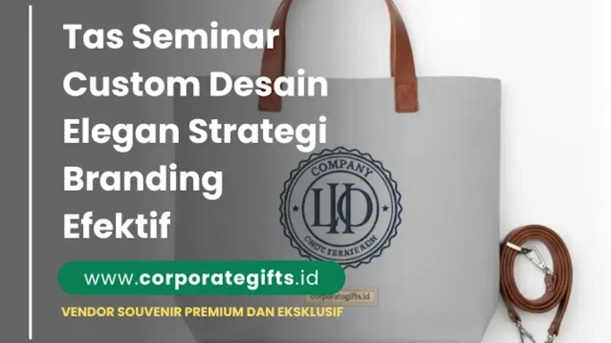

Corporate Gifts ID - Tas seminar custom adalah tas yang diproduksi dengan desain, warna, dan logo khusus sesuai identitas perusahaan, digunakan sebagai media branding sekaligus cinderamata profesional dalam seminar, workshop, atau konferensi bisnis.
Dalam setiap acara profesional berskala regional maupun nasional, tas seminar bukan sekadar wadah pembungkus dokumen atau suvenir. Lebih dari itu, tas seminar custom berperan sebagai representasi langsung dari reputasi, kelas, dan komitmen mutu instansi penyelenggara di mata peserta. Berbeda dari tas seminar murah yang memakai pola standar dan diproduksi massal di pasaran terbuka, tas seminar custom dan tas seminar eksklusif dirancang sedemikian rupa agar selaras dengan pedoman visual (brand guideline) korporat. Hasilnya, produk ini jauh lebih efektif dalam membangun kesan pertama yang solid dan memperkuat identitas perusahaan di benak para pemangku kepentingan.
Poin Kunci Tas Seminar Custom:
- Representasi Citra Korporat: Kualitas jahitan, resleting, dan material mencerminkan standar profesionalisme perusahaan penyelenggara.
- Media Promosi Berkelanjutan: Tas yang modis dan fungsional akan terus dipakai peserta untuk bekerja, kuliah, atau bepergian setelah seminar usai.
- Kustomisasi Tanpa Batas: Fleksibilitas dalam memilih kombinasi bahan kain, warna benang, kompartemen laptop, serta teknik cetak logo.
- Efisiensi Anggaran Berbasis Skala: Pilihan bahan yang variatif memungkinkan penyesuaian biaya tanpa mengorbankan estetika visual.
Ketika peserta melangkah keluar dari ruang seminar membawa tas seminar kantor berlogo rapi dan warna khas perusahaan, mereka tidak hanya mengingat materi pelatihan yang disampaikan, tetapi juga menaruh respek mendalam pada brand penyelenggara. Itulah mengapa pemilihan desain, bahan baku, dan vendor yang tepat menjadi langkah krusial dalam strategi promosi terpadu.
Apa Itu Tas Seminar Custom?
Tas seminar custom adalah tas yang dirancang secara khusus mulai dari pemilihan pola potongan (pattern design), jenis kain luar dan furing dalam, penambahan kompartemen fungsional (seperti slot laptop busa peredam benturan dan saku botol minum), hingga penempatan identitas visual logo instansi. Berbeda dengan tas siap pakai di toko retail, tas custom diproduksi berdasarkan pesanan terintegrasi yang mengakomodasi kebutuhan spesifik acara korporat.
Mengapa Tas Seminar Custom Penting untuk Branding Perusahaan?
Tas seminar custom memberikan nilai tambah yang jauh melampaui suvenir seremonial biasa karena setiap detailnya dirancang untuk berbicara atas nama brand Anda. Berikut tiga alasan fundamental mengapa tas custom menjadi instrumen branding yang sangat kuat:
- Meningkatkan Citra Profesional Perusahaan: Peserta seminar korporat adalah para profesional, akademisi, dan pejabat yang memiliki kepekaan terhadap kualitas barang. Memberikan tas seminar berkualitas tinggi langsung membentuk persepsi bahwa perusahaan Anda beroperasi dengan standar mutu unggulan.
- Menjadi Media Promosi Bergerak Jangka Panjang: Berbeda dari brosur kertas yang sering kali berakhir di tempat sampah, tas seminar yang nyaman dan kokoh akan digunakan kembali sebagai tas harian di kantor, kampus, bandara, atau kafe. Logo perusahaan Anda akan terekspos secara natural ke ratusan mata baru setiap hari.
- Menciptakan Eksklusivitas dan Kebanggaan Peserta: Produk pesanan khusus menghadirkan rasa dihargai yang lebih mendalam. Peserta merasa menerima bingkisan yang dikurasi dengan sungguh-sungguh, bukan sekadar hadiah sisa stok gudang.
Jenis Bahan Tas Seminar Custom yang Paling Populer
Pemilihan material merupakan fondasi utama yang menentukan daya tahan fisik, kenyamanan ergonomis, dan kesan visual tas seminar. Berikut empat jenis bahan yang paling banyak dipilih oleh pengada corporate gift di Indonesia:
1. Kanvas Premium (Baby Canvas & Cotton Canvas)
Kanvas dikenal memiliki struktur serat benang yang tebal, rapat, dan tahan gesekan. Bahan ini sangat digemari untuk seminar bertema pelatihan bisnis, workshop kreatif, maupun program inkubasi startup. Kelebihannya adalah nuansa kasual-elegan yang sangat estetis, ramah lingkungan, serta sangat prima saat dicetak sablon full color maupun bordir komputer.
2. Polyester D600, D300, dan Cordura
Polyester merupakan material primadona untuk kebutuhan tas ransel, tas selempang kerja, dan tas laptop kantor. Keunggulan utamanya adalah sifat seratnya yang ringan, memiliki lapisan tahan air (water-repellent), tidak mudah kusut, serta sangat kuat menahan beban berat perangkat elektronik. Polyester memberikan siluet tas yang rapi, modern, dan sangat profesional.
3. Kulit Sintetis (PU Leather Eksklusif)
Kulit sintetis tipe PU (Polyurethane) menghadirkan tekstur mewah menyerupai kulit asli dengan fleksibilitas tinggi dan ketahanan luar biasa. Bahan ini tahan cipratan air, mudah dibersihkan dari noda debu, dan memancarkan wibawa formal. Sangat cocok dijadikan bahan utama tas jinjing eksekutif pada konferensi tingkat tinggi kementerian, forum bisnis BUMN, dan rapat umum pemegang saham (RUPS).
4. Spunbond Non-Woven Ramah Anggaran
Spunbond menjadi alternatif ekonomis favorit untuk acara seminar akbar dengan jumlah peserta ratusan hingga ribuan orang, seperti seminar orientasi kampus atau sosialisasi instansi publik. Karakteristiknya ringan, mudah disablon teks tematik, dan biaya produksinya sangat terjangkau, menjadikannya solusi tas bawaan seminar kit yang praktis.

Ragam pilihan material premium dan aksen warna korporat pada tas seminar custom untuk kebutuhan konferensi profesional.
Desain Tas Seminar Custom yang Efektif untuk Branding
Desain adalah elemen pembeda yang menentukan apakah tas tersebut akan menjadi barang favorit peserta atau hanya tersimpan di lemari. Berikut empat prinsip desain esensial untuk memaksimalkan daya tarik branding:
- Aplikasi Warna Korporat yang Proporsional: Jadikan warna brand sebagai aksen visual utama pada tarikan resleting, piping jahitan, atau tali webbing. Menghindari pewarnaan yang terlalu mencolok pada keseluruhan bidang tas membuat peserta lebih percaya diri memakainya di ruang publik.
- Teknik Branding Berkualitas Tinggi: Gunakan teknik bordir komputer timbul (3D embroidery) untuk material polyester atau kanvas, deboss/emboss kulit untuk PU leather, atau plat logam laser grafir untuk tas eksekutif. Teknik ini jauh lebih awet dibanding sablon cat biasa yang rentan pecah.
- Bentuk Tas yang Selaras dengan Format Acara: Pilih ransel laptop untuk pelatihan intensif atau konvensi IT, tas selempang dokumen (messenger bag) untuk seminar hukum dan keuangan, serta tote bag kanvas untuk workshop seni, kesehatan, atau lingkungan hidup.
- Keseimbangan Ergonomi dan Kompartemen: Pastikan tali pundak dilengkapi busa empuk, resleting menggunakan merk teruji seperti YKK, dan ruang dalam memiliki sekat teratur agar barang bawaan peserta tertata rapi.
Cara Memilih Vendor Tas Seminar Custom yang Terpercaya
Memilih mitra konveksi tas custom memerlukan ketelitian agar target tenggat waktu acara kantor Anda tidak terganggu keterlambatan produksi. Pastikan vendor memenuhi kriteria berikut:
- Portofolio Proyek Klien B2B Nyata: Vendor kredibel memiliki rekam jejak produksi untuk instansi BUMN, kementerian, dan korporasi multinasional dengan hasil jahitan yang presisi.
- Ketersediaan Sampel Fisik Pra-Produksi (Proof Sample): Jangan pernah memulai produksi massal sebelum memegang dan menguji langsung sampel fisik tas contoh untuk memastikan akurasi warna kain dan ketepatan ukuran logo.
- Transparansi Legalitas dan Faktur Pajak: Pengadaan seminar kit instansi memerlukan kelengkapan administrasi seperti NPWP badan, SPK resmi, faktur pajak PPN/PPh, serta rekening bank perusahaan.
- Fleksibilitas Konsultasi Desain: Vendor profesional menyediakan desainer in-house yang siap membuatkan visualisasi 3D mockup gratis untuk membantu Anda meyakinkan pimpinan rapat.
- Jaminan Garansi Ketepatan Waktu (On-Time Delivery): Pastikan adanya klausul perjanjian ketepatan waktu pengiriman barang demi kelancaran hari H acara seminar Anda.
Tabel Estimasi Harga Tas Seminar Custom
Estimasi biaya pembuatan tas seminar custom di pasaran konveksi profesional sangat ditentukan oleh pemilihan jenis material, tingkat kerumitan pola, aksesoris pengait, serta volume kuantitas pemesanan:
| Kategori Tas & Bahan | Rentang Estimasi Harga | Peruntukan Ideal | Karakteristik Utama |
|---|---|---|---|
| Spunbond Non-Woven | Rp 10.000 - Rp 25.000 | Seminar Kampus & Sosialisasi Akbar | Ringan, ekonomis, sablon teks 1-2 warna |
| Tote Bag Kanvas | Rp 30.000 - Rp 65.000 | Workshop Kreatif & Komunitas Bisnis | Kuat, serat alami estetis, cetak sablon tajam |
| Sling Bag Polyester | Rp 50.000 - Rp 95.000 | Pelatihan Teknis & Gathering Korporat | Bahan D300/D600 tahan air, kompartemen gadget |
| Ransel Laptop Polyester | Rp 85.000 - Rp 165.000 | Konferensi Profesional & Diklat Nasional | Slot busa laptop 14-15 inci, bordir timbul YKK |
| Briefcase PU Leather | Rp 175.000 - Rp 350.000 | Forum Bisnis VIP, BUMN & RUPS | Tampilan mewah, deboss logo halus, plat metal |
Contoh Penggunaan Tas Seminar Custom di Dunia Profesional
Karakteristik tas custom dapat disesuaikan secara presisi dengan identitas industri yang menaunginya:
- Perusahaan Teknologi & Fintech: Menggunakan tas ransel laptop berbahan cordura modern dengan lubang port USB eksternal dan bordir logo minimalis monokrom.
- Lembaga Pendidikan & Universitas: Membagikan tote bag kanvas tebal dengan kantong luar untuk membawa buku catatan seminar dan tumbler air minum.
- Instansi Kementerian & Lembaga Pemerintah: Mengandalkan tas dokumen bahan kulit sintetis PU dengan emboss lambang garuda emas dan zipper anti karat.
- Lembaga Sertifikasi Profesi & Hukum: Menyediakan tas jinjing kerja berpenyekat map dokumen folio yang fungsional untuk menampung modul regulasi tebal.
Hubungan Tas Seminar Custom dengan Branding Jangka Panjang
Tas seminar bukan hanya cinderamata sesaat yang masa manfaatnya habis saat penutupan acara. Tas adalah alat komunikasi visual bergerak yang membawa brand institusi Anda langsung ke ruang publik tempat para profesional beraktivitas. Ketika seorang peserta merasa tas seminar yang diterimanya sangat nyaman dan elegan, ia akan memakainya setiap hari ke kantor, saat rapat dengan klien lain, maupun saat perjalanan dinas luar kota.
Investasi pada material berkualitas dan desain yang elegan memberikan tingkat pengembalian nilai promosi (Return on Investment / ROI) yang jauh lebih tinggi dibandingkan media periklanan konvensional. Setiap rupiah yang Anda alokasikan menjadi investasi berkelanjutan dalam merawat loyalitas serta daya ingat konsumen terhadap brand Anda.
Kesimpulan: Investasi Citra yang Berkelanjutan
Tas seminar custom adalah pilar krusial dari keberhasilan strategi perhelatan seminar korporat. Melalui perpaduan material berkualitas tinggi, desain visual yang berwibawa, serta pengerjaan konveksi yang rapi, tas seminar berubah menjadi duta merek yang bekerja memperkenalkan keunggulan perusahaan Anda secara berkelanjutan.
Konsultasikan kebutuhan tas seminar custom, ransel laptop eksklusif, maupun paket seminar kit terpadu kantor Anda bersama CorporateGifts.ID. Tim desainer dan spesialis pengadaan kami siap membantu mulai dari pembuatan sampel fisik hingga pengiriman tepat waktu ke seluruh kota di Indonesia.
FAQ tentang Tas Seminar Custom

Ditulis oleh: Arinda Zakia
Senior Corporate Gifting SpecialistSpesialis strategi seminar kit korporat, kurasi suvenir konferensi eksekutif, dan tren merchandise perkantoran modern di CorporateGifts.ID. Berpengalaman mendampingi ratusan instansi pemerintah dan perusahaan swasta merancang souvenir berkelas.
Lihat Profil Lengkap & Panduan Lainnya